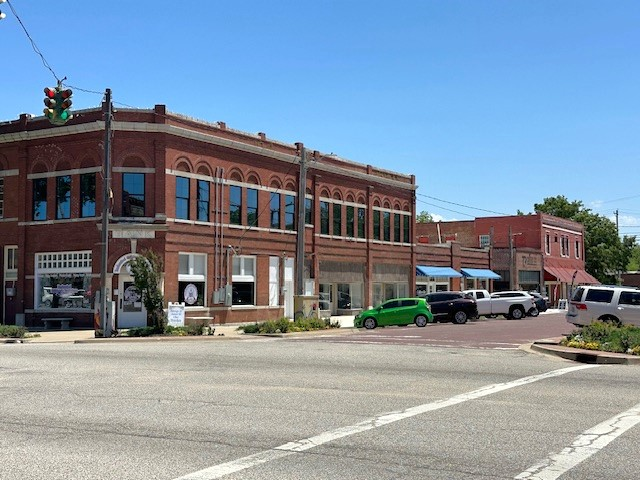
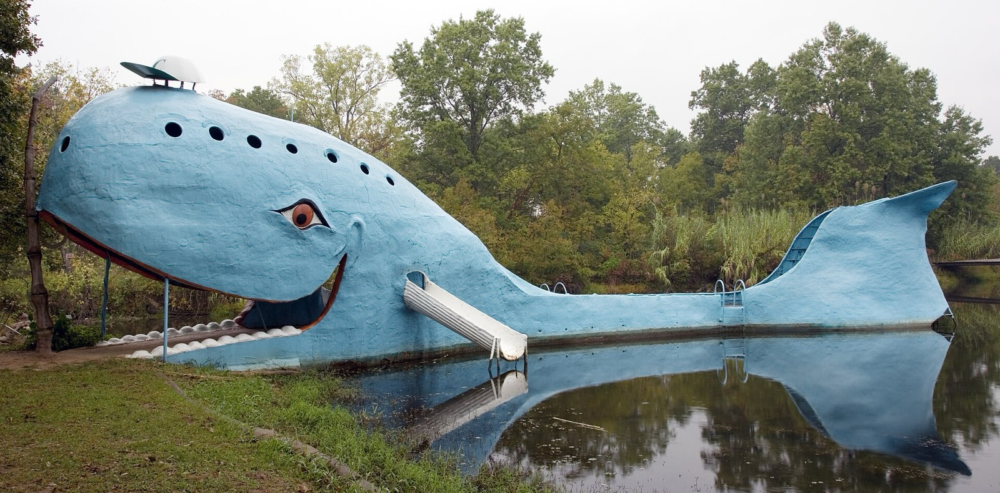
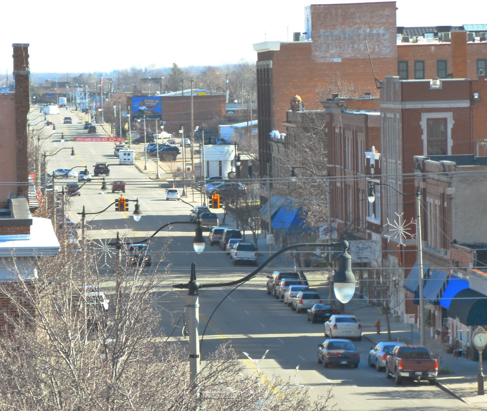

Service areas
Tulsa metro plumbing service with local accountability.
Pacific Plumbing is built for homeowners across the Tulsa metro who want plumbing help that is clear, prompt, and easy to understand. Explore dedicated plumbing pages for Collinsville, Catoosa, Verdigris, Sapulpa, and other nearby communities.
Local plumbing pages
Plumbing service areas across the Tulsa metro.
Pacific Plumbing now has dedicated community pages for nearby cities so homeowners can find local plumbing service, core service links, and clear next steps by location.

plumber Collinsville OK Collinsville Plumbing Need a plumber in Collinsville, OK? Pacific Plumbing serves Collinsville homeowners with water heater repair, leak detection, drains, fixtures, re-piping, and plumbing service.
plumber Catoosa OK Catoosa Plumbing Pacific Plumbing serves Catoosa, OK with residential plumbing for water heaters, leaks, drains, sewer lines, fixtures, water lines, re-pipes, and gas line needs. plumber Verdigris OK
Verdigris Plumbing
Pacific Plumbing serves Verdigris, OK homeowners with leak detection, water line repair, drains, sewer, fixtures, water heaters, gas lines, and re-piping.
plumber Verdigris OK
Verdigris Plumbing
Pacific Plumbing serves Verdigris, OK homeowners with leak detection, water line repair, drains, sewer, fixtures, water heaters, gas lines, and re-piping.

plumber Sapulpa OK Sapulpa Plumbing Looking for a plumber in Sapulpa, OK? Pacific Plumbing helps with water heaters, drains, sewer, leak detection, fixtures, water lines, re-piping, and gas lines.Ready when you are
Get out of a slippery situation today.
Call now or request a service window. Pacific Plumbing will help you understand the problem and choose the right fix.